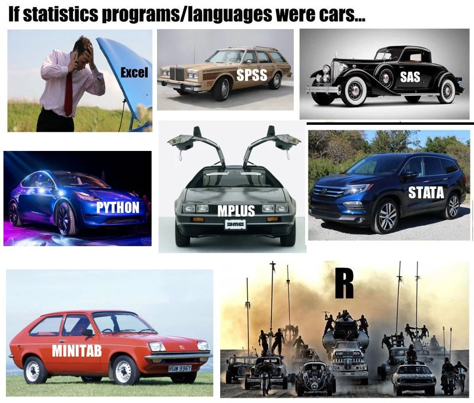

# Setup for Google Colab: Fetch datasets automatically or manually
%run ../../bootstrap.py # installs requirements + editable package
import fns_toolkit as fns
import pandas as pd # For data manipulation
import numpy as np # For numerical operations🧮 1.2 Python vs R vs Other Tools for Nutrition Data Analysis
This notebook compares Python, R, SPSS, and XLStat as tools for data analysis in food and nutrition sciences, helping MSc students choose the right tool for their research.
Objectives:
- Understand the strengths and weaknesses of Python, R, SPSS, and XLStat.
- Perform a simple analysis in Python using
hippo_diets.csv. - Reflect on tool selection for nutrition research (e.g., NDNS analysis).
Context: Nutrition studies often require robust data analysis tools. Python offers flexibility, R excels in statistical packages, SPSS provides a user-friendly interface, and XLStat integrates with Excel for sensory analysis. Choosing the right tool depends on your project needs!
Fun Fact
Choosing a tool is like a hippo picking its favourite snack—carrots, fruit, or a mix of both might suit different tastes! 🦛🧰 What Do We Mean by “Tools”?
In data science, a tool is a program or environment that helps you: - Load and clean data - Perform calculations and analysis - Visualise or report results
You’ve probably used some already — Excel, SPSS, R, or Python.
Each tool has different strengths depending on the kind of problem and how much flexibility or automation you need.
Choosing a tool is part of being a thoughtful data analyst — like choosing the right lab equipment!
💡 Tool Comparison
Here’s a detailed comparison of Python, R, SPSS, and XLStat, focusing on their use in nutrition data analysis:
| Tool | Strengths | Limitations | Best For |
|---|---|---|---|
| Python | Open-source, general-purpose, readable, supports automation, machine learning, and large datasets | Requires coding knowledge, slightly more setup | Pipelines, dashboards, reproducible workflows, NDNS analysis |
| R | Excellent statistical packages (e.g., ggplot2, dplyr), built-in stats functions, visualisation |
Less general-purpose, steeper learning curve for non-stats tasks | Statistical analysis, visualisation, epidemiology studies |
| SPSS | User-friendly GUI, menu-driven stats, widely used in social sciences and nutrition | Limited flexibility, expensive, poor reproducibility (manual steps) | Quick statistical tests, small studies, users preferring GUI |
| XLStat | Integrates with Excel, excellent for sensory analysis and multivariate stats, user-friendly | Expensive, closed environment, limited scripting, tied to Excel’s limitations | Sensory evaluation, Excel-based workflows, quick multivariate analysis |
Detailed Differences:
🔧 Usability:
- Python and R require coding but offer flexibility and reproducibility. Python’s syntax (e.g.,
pandas) is often more intuitive for beginners, while R’s statistical functions (e.g.,summary()) are straightforward for stats tasks. - SPSS uses a graphical interface, making it accessible for non-coders, but manual steps (e.g., clicking menus) hinder automation. For example, running an ANOVA in SPSS involves selecting options through menus, which isn’t logged as code.
- XLStat also uses a GUI within Excel, ideal for users comfortable with spreadsheets. It simplifies tasks like principal component analysis (PCA) for sensory data but lacks the depth of Python or R for custom analyses.
🔄 Reproducibility:
- Python and R excel here—code can be shared and rerun exactly (e.g., this notebook!). Python’s
pandasand R’sdplyrallow scripted workflows. - SPSS and XLStat struggle with reproducibility. SPSS can generate syntax, but it’s often an afterthought, and XLStat’s Excel integration means steps are buried in spreadsheet operations, making them error-prone and hard to replicate.
💷 Cost:
- Python and R are free and open-source, making them accessible for students and researchers.
- SPSS and XLStat are commercial. SPSS requires a costly licence, often prohibitive for individuals, though universities may provide access. XLStat also requires a paid licence, adding to Excel’s cost, which can be a barrier for small research groups.
🤸 Flexibility:
- Python is the most flexible, supporting everything from data cleaning (
pandas) to machine learning (scikit-learn) and dashboards (Dash). It’s ideal for building end-to-end pipelines in nutrition research. - R is strong for statistical modelling and visualisation but less suited for non-stats tasks like web apps.
- SPSS is rigid—its GUI limits customisation, and scripting is clunky. It’s best for standard statistical tests (e.g., t-tests, ANOVA).
- XLStat offers flexibility within Excel’s ecosystem, with modules for sensory analysis, but it’s constrained by Excel’s limitations (e.g., handling large datasets, automation).
Why Python for This Toolkit?
Python is our choice because it’s free, supports reproducible workflows, and can handle everything from small scripts to large nutrition data pipelines (e.g., NDNS analysis). It’s also widely used in modern research, making it a valuable skill for MSc students!
🍽️ Common Use Cases in Food & Nutrition Sciences
| Scenario | Best Tool |
|---|---|
| Analysing NDNS dietary intake data | 🐍 Python, 📊 R |
| Quick t-test for nutrient intervention | 📋 SPSS |
| Multivariate PCA for sensory scores | 📈 XLStat |
| Creating automated plots and reports | 🐍 Python |
| Statistical model for food safety risk | 📊 R |
🚗 Fun Analogy: If Statistics Tools Were Cars…
To lighten things up, here’s a humorous take on these tools as cars, reflecting their characteristics in data analysis:

- Excel: A broken-down car—familiar but unreliable for serious analysis due to errors and lack of reproducibility.
- SPSS: An old station wagon—functional for basic stats but outdated and slow for modern research needs.
- Python: A sleek Tesla—modern, versatile, and powerful, perfect for cutting-edge nutrition research.
- R: A Mad Max-style armoured vehicle—robust for stats but complex and intimidating for beginners.
- Stata: A reliable SUV—practical and user-friendly, though not as flexible as Python or R.
- Minitab: A small hatchback—basic and limited, suitable for quick tasks but not heavy lifting.
- SAS: A classic luxury car—powerful and expensive, often overkill for most nutrition studies.
Note: SPSS and XLStat aren’t shown in the image, but we’d imagine SPSS as a dependable but clunky minivan (user-friendly but not agile) and XLStat as a modified Excel car—handy for specific tasks but constrained by its base model (Excel)!
🧭 Tool Selection Guide
Use this quick decision tree to help choose a data analysis tool based on your preferences:
Are you comfortable writing code?
├── ❌ No
│ ├── Prefer Excel? → ✅ XLStat
│ └── Prefer menu-based stats? → ✅ SPSS
└── ✅ Yes
├── Focus on statistics/plots? → ✅ R
└── Need automation/flexibility? → ✅ Python🍽️ Common Use Cases in Food & Nutrition Sciences
| Scenario | Best Tool |
|---|---|
| Analysing NDNS dietary intake data | Python, R |
| Quick t-test for nutrient intervention | SPSS |
| Multivariate PCA for sensory scores | XLStat |
| Creating automated plots and reports | Python |
| Statistical model for food safety risk | R |
Tip: There’s no perfect tool — it depends on your project, dataset size, goals, and your own learning style!
🦛
Hippo says: “Use the tool that gets you moving, not just the one with the flashiest horn.”Python Analysis Example
Let’s perform a simple analysis in Python using hippo_diets.csv to compute summary statistics for calories and protein. This mirrors what you might do in R, SPSS, or XLStat, but with Python’s reproducible code.
df = fns.get_dataset('hippo_diets')
# Compute summary statistics for Calories and Protein columns
# .describe() generates stats like count, mean, std, min, max
# We select specific rows for clarity
summary = df[['Calories', 'Protein']].describe().loc[['count', 'mean', 'std', 'min', 'max']]
print(summary) # Display the summary statisticsHow Other Tools Would Do This
R: In R, you’d use summary() for similar stats:
df <- read.csv('data/hippo_diets.csv')
summary(df[, c('Calories', 'Protein')])R’s output includes quartiles (e.g., 25%, 50%, 75%), which Python’s describe() also provides but we filtered out for brevity.
SPSS: In SPSS, you’d: 1. Import hippo_diets.csv via File > Open > Data. 2. Go to Analyze > Descriptive Statistics > Frequencies. 3. Select Calories and Protein, then click Statistics to choose mean, std, min, max. 4. Run and view results in the Output window. This is user-friendly but manual—steps aren’t scripted, making it hard to reproduce.
XLStat: In XLStat (within Excel): 1. Open hippo_diets.csv in Excel. 2. Go to XLStat > Describing Data > Descriptive Statistics. 3. Select Calories and Protein columns, choose stats (mean, std, etc.), and run. 4. Results appear in a new Excel sheet. This is quick for Excel users but limited by Excel’s scalability and lack of scripting.
🧪 Exercises
Compare Outputs: Run the Python code above. How does Python’s
describe()output compare to what you’d expect from R’ssummary(), SPSS’s Frequencies, or XLStat’s Descriptive Statistics? Write your thoughts in a Markdown cell below. Consider ease of use, output format, and reproducibility.Calculate a Median: Write a Python script to calculate the median of
[1, 2, 3, 4, 100]. How would you do this in SPSS or XLStat? (Hint: SPSS uses Analyze > Descriptive Statistics; XLStat uses Describing Data > Descriptive Statistics.)Research Tools: Choose one tool (SPSS or XLStat) and Google “
vs Python for nutrition data analysis”. Summarise your findings in a Markdown cell. How does this influence your tool choice for a project like NDNS analysis?
Guidance: Use the comparison table and car analogy to reflect on which tool suits your research needs!
Your Answers:
Exercise 1: Compare Outputs
Python’s describe() provides…
Exercise 2: Calculate Median
[Write your Python code and compare with SPSS/XLStat]
Exercise 3: Research Tools
[Summarise your findings here]
Conclusion
You’ve compared Python, R, SPSS, and XLStat for nutrition data analysis and performed a Python analysis with hippo_diets.csv. Python’s flexibility and reproducibility make it ideal for this toolkit, but R, SPSS, and XLStat have their strengths—R for stats, SPSS for GUI users, and XLStat for Excel-based sensory analysis.
Next Steps: Explore version control with Git in 1.3_intro_to_git.ipynb.
Resources: - Python Documentation - R Project - SPSS Overview - XLStat Features - Repository: github.com/ggkuhnle/data-analysis-toolkit-FNS